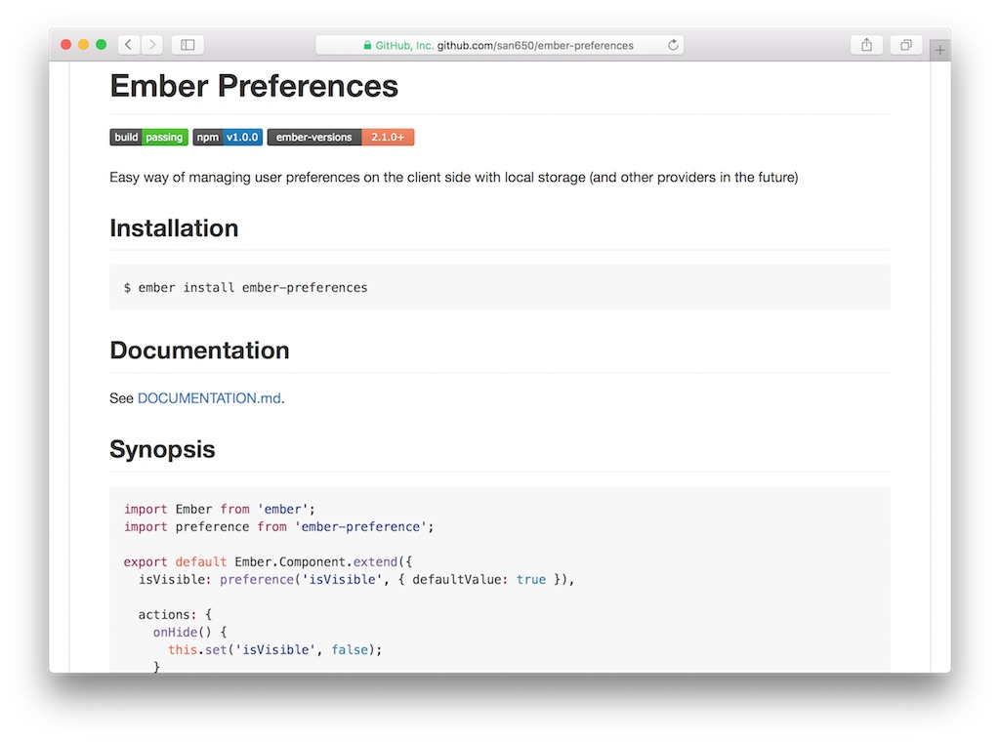

Marzo de 2016
- Fecha: 10 de marzo de 2016
- Hora: de 19:30 a 22:00
- Participantes: 7

Actividades
ember-preferences
Santiago nos guió paso a paso en la construcción de una solución cross application para almacenar preferencias de usuarios. El resultado de lo que se mostró luego se extrajo a un addon de ember-cli.
Recursos
Participantes
- Fabian Rodriguez (@fabianrbz)
- Mauricio Mena (@lvlauricio)
- Julio Barrios (@jubar)
- Luis Ferreira (@hidnasio)
- Santiago Ferreira (@san650)
- Gabriel Roldan (@luisgabrielroldan)
- Sebastian Barcelona (@sbarcelona11)
Agradecimiento
Agradecemos a WyeWorks por brindarnos el lugar e invitarnos las bebidas, los snacks y la cena.